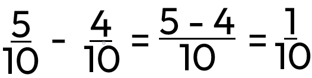

Odčítání
Při odčítání zlomků je nutné mít stejného jmenovatele. Pokud mají zlomky různé jmenovatele, upravíme je na společného jmenovatele. Například 5/6 - 2/3 se upraví na 5/6 - 4/6, což po odečtení dá 1/6. Pokud zlomky mají stejný jmenovatel, stačí odečíst čitatele.
Zlomky se stejným jmenovatelem
Zlomky s různým jmenovatelem
Počítají se skoro stejně jako zlomky se stejným jmenovatelem, ale musí se převést (rozšířit, zkrátit) na stejného jmenovatele.